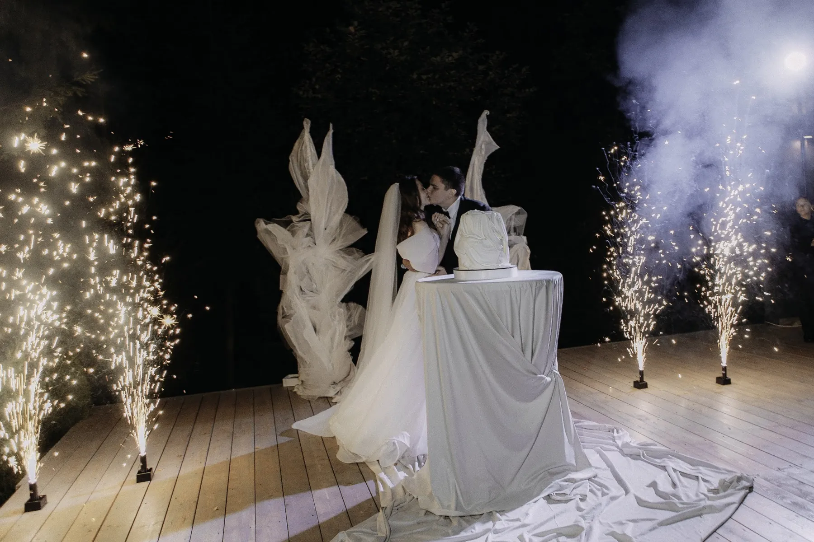

Торт — финальная точка вечера, и его оформление должно вписываться в общую идею свадьбы. Цветы на торте и вокруг него добавляют цельности, но требуют договорённостей: цветы должны быть безопасными и согласованными с кондитером. Разбираем, что учесть.
Торт в палитре свадьбы
Цвет и форма торта должны продолжать палитру: белый торт при белой свадьбе, акцентные цвета — в цветах и декоре стола. Подробнее о палитрах — в статье про цвет свадьбы.
Цветы на торте: договоритесь с кондитером
Цветы на торте заказывают вместе с кондитером. Не все цветы подходят для контакта с едой: нужны безопасные варианты, стебли изолируют, и это решает тот, кто делает торт. Поэтому сначала обсудите идею с кондитером, а затем согласуйте с декоратором, как цветы на торте сочетаются с флористикой зала.
Оформление зоны торта
- Стол. Ткань в палитре свадьбы, ровная и аккуратная.
- Цветы вокруг. Небольшие композиции рядом с тортом — в одном стиле с президиумом.
- Свет. Мягкая подсветка и свечи: торт хорошо смотрится в вечернем свете.
- Место. Заметное для гостей и фотографа, без бликов и сквозняков.
О столах и композициях — в статьях про декор свадебного стола и про свечи на свадьбу. Пример вечерней зоны — в кейсе «Белые цветы в тёмном зале».

Что согласовать
- Какие цветы допустимы на торте и кто их ставит.
- Когда торт привезут и кто его расставляет.
- Где будет стол и как он оформлен.
- Как закрепить декор, чтобы не повредить торт.
Расскажите о зале и стиле свадьбы — предложим оформление стола и посчитаем смету.
Частые вопросы
Можно ли использовать живые цветы на торте?
Да, но только безопасные варианты, согласованные с кондитером.
Кто должен ставить цветы на торт?
Тот, кто делает торт, или специалист по согласованию с кондитером.
Как оформить стол с тортом?
Ткань в палитре свадьбы, небольшие композиции рядом и мягкий свет.